산업안전기사 (2021-08-14 기출문제)
1과목: 안전관리론
1. 안전점검표(체크리스트) 항목 작성 시 유의사항으로 틀린 것은?
- 정기적으로 검토하여 설비나 작업방법이 타당성 있게 개조된 내용일 것
- 사업장에 적합한 독자적 내용을 가지고 작성할 것
- 위험성이 낮은 순서 또는 긴급을 요하는 순서대로 작성할 것
- 점검항목을 이해하기 쉽게 구체적으로 표현할 것
(정답률: 80%)

2. 안전교육에 있어서 동기부여방법으로 가장 거리가 먼 것은?
- 책임감을 느끼게 한다.
- 관리감독을 철저히 한다.
- 자기 보존본능을 자극한다.
- 물질적 이해관계에 관심을 두도록 한다.
(정답률: 69%)
3. 교육과정 중 학습경험조직의 원리에 해당하지 않는 것은?
- 기회의 원리
- 계속성의 원리
- 계열성의 원리
- 통합성의 원리
(정답률: 53%)
4. 근로자 1000명 이상의 대규모 사업장에 적합한 안전관리 조직의 유형은?
- 직계식 조직
- 참모식 조직
- 병렬식 조직
- 직계참모식 조직
(정답률: 84%)
5. 산업안전보건법령상 안전보건표지의 종류와 형태 중 관계자 외 출입금지에 해당하지 않는 것은?
- 관리대상물질 작업장
- 허가대상물질 작업장
- 석면취급ㆍ해체 작업장
- 금지대상물질의 취급 실험실
(정답률: 57%)
6. 산업안전보건법령상 명시된 타워크레인을 사용하는 작업에서 신호업무를 하는 작업 시 특별교육 대상 작업별 교육 내용이 아닌 것은? (단, 그 밖에 안전ㆍ보건관리에 필요한 사항은 제외한다.)
- 신호방법 및 요령에 관한 사항
- 걸고리ㆍ와이어로프 점검에 관한 사항
- 화물의 취급 및 안전작업방법에 관한 사항
- 인양물이 적재될 지반의 조건, 인양하중, 풍압 등이 인양물과 타워크레인에 미치는 영향
(정답률: 56%)
7. 보호구 안전인증 고시상 추락방지대가 부착된 안전대 일반구조에 관한 내용 중 틀린 것은?
- 죔줄은 합성섬유로프를 사용해서는 안된다.
- 고정된 추락방지대의 수직구멍줄은 와이어로프 등으로 하며 최소지름이 8mm이상이어야 한다.
- 수직구명줄에서 걸이설비와의 연결부위는 훅 또는 카라비너 등이 장착되어 걸이설비와 확실히 연결되어야 한다.
- 추락방지대를 부착하여 사용하는 안전대는 신체지지의 방법으로 안전그네만을 사용하여야 하며 수직구멍줄이 포함되어야 한다.
(정답률: 64%)
8. 하인리히 재해 구성 비율 중 무상해사고가 600건이라면 사망 또는 중상 발생 건수는?
- 1
- 2
- 29
- 58
(정답률: 76%)
9. 재해사례연구 순서로 옳은 것은?
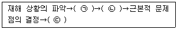
- ㉠문제점의 발견, ㉡대책수립, ㉢사실의 확인
- ㉠문제점의 발견, ㉡사실의 확인, ㉢대책수립
- ㉠사실의 확인, ㉡대책수립, ㉢문제점의 발견
- ㉠사실의 확인, ㉡문제점의 발견, ㉢대책수립
(정답률: 75%)
10. 강의식 교육지도에서 가장 많은 시간을 소비하는 단계는?
- 도입
- 제시
- 적용
- 확인
(정답률: 73%)
11. 위험예지훈련 4단계의 진행 순서를 바르게 나열한 것은?
- 목표설정→현상파악→대책수립→본질추구
- 목표설정→현상파악→본질추구→대책수립
- 현상파악→본질추구→대책수립→목표설정
- 현상파악→본질추구→목표설정→대책수립
(정답률: 65%)
12. 레윈(Lewin.K)에 의하여 제시된 인간의 행동에 관한 식을 올바르게 표현한 것은? (단, B는 인간의 행동, P는 개체, E는 환경, f는 함수관계를 의미한다.)
- B=f(PㆍE)
- B=f(P+1)E
- P=Eㆍf(B)
- E=f(PㆍB)
(정답률: 86%)
13. 산업안전보건법령상 근로자에 대한 일반 건강진단의 실시 시기 기준으로 옳은 것은?
- 사무직에 종사하는 근로자: 1년에 1회 이상
- 사무직에 종사하는 근로자: 2년에 1회 이상
- 사무직외의 업무에 종사하는 근로자: 6월에 1회 이상
- 사무직외의 업무에 종사하는 근로자: 2년에 1회 이상
(정답률: 75%)
14. 매슬로우(Maslow)의 욕구 5단계 이론 중 안전욕구의 단계는?
- 제1단계
- 제2단계
- 제3단계
- 제4단계
(정답률: 80%)
15. 교육계획 수립 시 가장 먼저 실시하여야 하는 것은?
- 교육내용의 결정
- 실행교육계획서 작성
- 교육의 요구사항 파악
- 교육실행을 위한 순서, 방법, 자료의 검토
(정답률: 74%)
16. 상황성 누발자의 재해유발원인이 아닌 것은?
- 심신의 근심
- 작업의 어려움
- 도덕성의 결여
- 기계설비의 결함
(정답률: 75%)
17. 인간의 의식 수준을 5단계로 구분할 때 의식이 몽롱한 상태의 단계는?
- Phase Ⅰ
- Phase Ⅱ
- Phase Ⅲ
- Phase Ⅳ
(정답률: 68%)
18. 산업안전보건법령상 사업장에서 산업재해 발생 시 사업주가 기록ㆍ보존하여야 하는 사항을 모두 고른 것은? (단, 산업재해조사표와 요양신청서의 사본은 보존하지 않았다.)
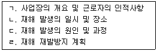
- ㄱ, ㄹ
- ㄴ, ㄷ, ㄹ
- ㄱ, ㄴ, ㄷ
- ㄱ, ㄴ, ㄷ, ㄹ
(정답률: 73%)
19. A사업장의 조건이 다음과 같을 때 A사업장에서 연간재해발생으로 인한 근로손실일수는?
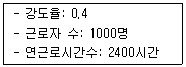
- 480
- 720
- 960
- 1440
(정답률: 70%)
20. 무재해운동의 이념 중 선취의 원칙에 대한 설명으로 옳은 것은?
- 사고의 잠재요인을 사후에 파악하는 것
- 근로자 전원이 일체감을 조성하여 참여하는 것
- 위험요소를 사전에 발견, 파악하여 재해를 예방 또는 방지하는 것
- 관리감독자 또는 경영층에서의 자발적 참여로 안전 활동을 촉진하는 것
(정답률: 84%)
2과목: 인간공학 및 시스템안전공학
21. 다음 상황은 인간실수의 분류 중 어느 것에 해당하는가?
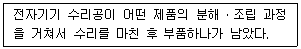
- time error
- omission error
- command error
- extraneous error
(정답률: 75%)
22. 스트레스의 영향으로 발생된 신체 반응의 결과인 스트레인(strain)을 측정하는 척도가 잘못 연결된 것은?
- 인지적 활동 - EEG
- 육체적 동적 활동 - GSR
- 정신 운동적 활동 - EOG
- 국부적 근육 활동 – EMG
(정답률: 57%)
23. 일반적인 시스템의 수명곡선(욕조곡선)에서 고장형태 중 증가형 고장률을 나타내는 기간으로 옳은 것은?
- 우발 고장기간
- 마모 고장기간
- 초기 고장기간
- Burn-in 고장기간
(정답률: 77%)
24. 청각적 표시장치의 설계 시 적용하는 일반 원리에 대한 설명으로 틀린 것은?
- 양립성이란 긴급용 신호일 때는 낮은 주파수를 사용하는 것을 의미한다.
- 검약성이란 조작자에 대한 입력신호는 꼭 필요한 정보만을 제공하는 것이다.
- 근사성이란 복잡한 정보를 나타내고자 할 때 2단계의 신호를 고려하는 것이다.
- 분리성이란 두 가지 이상의 채널을 듣고 있다면 각 채널의 주파수가 분리되어 있어야 한다는 의미이다.
(정답률: 67%)
25. FTA에 대한 설명으로 가장 거리가 먼 것은?
- 정성적 분석만 가능
- 하향식(top-down) 방법
- 복잡하고 대형화된 시스템에 활용
- 논리게이트를 이용하여 도해적으로 표현하여 분석하는 방법
(정답률: 70%)
26. 발생 확률이 동일한 64가지의 대안이 있을 때 얻을 수 잇는 총 정보량은?
- 6bit
- 16bit
- 32bit
- 64bit
(정답률: 61%)
27. 인간-기계 시스템의 설계 과정을 [보기]와 같이 분류할 때 다음 중 인간, 기계의 기능을 할당하는 단계는?
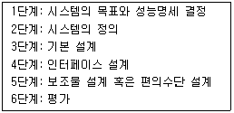
- 기본 설계
- 인터페이스 설계
- 시스템의 목표와 성능명세 결정
- 보조물 설계 혹은 편의수단 설계
(정답률: 68%)
28. FT도에서 최소 컷셋을 올바르게 구한 것은?
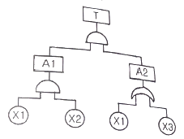
- (XI, X2)
- (X1, X3)
- (X2, X3)
- (X1, X2, X3)
(정답률: 65%)
29. 일반적으로 인체측정치의 최대집단치를 기준으로 설계하는 것은?
- 선반의 높이
- 공구의 크기
- 출입문의 크기
- 안내 데스크의 높이
(정답률: 81%)
30. 인간공학의 궁극적인 목적과 가장 관계가 깊은 것은?
- 경제성 향상
- 인간 능력의 극대화
- 설비의 가동률 향상
- 안전성 및 효율성 향상
(정답률: 76%)
31. ‘화재 발생’이라는 시작(초기)사상에 대하여, 화재감지기, 화재 경보, 스프링클러 등의 성공 또는 실패 작동여부와 그 확률에 따른 피해 결과를 분석하는데 가장 적합한 위험 분석 기법은?
- FTA
- ETA
- FHA
- THERP
(정답률: 45%)
32. 여러 사람이 사용하는 의자의 좌판 높이 설계 기준으로 옳은 것은?
- 5% 오금높이
- 50% 오금높이
- 75% 오금높이
- 95% 오금높이
(정답률: 64%)
33. FTA에서 사용되는 사상기호 중 결함사상을 나타낸 기호로 옳은 것은?
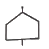
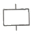
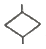
(정답률: 60%)
34. 기술개발과정에서 효율성과 위험성을 종합적으로 분석ㆍ판단할 수 있는 평가방법으로 가장 적절한 것은?
- Risk Assessment
- Risk Management
- Safety Assessment
- Technology Assessment
(정답률: 54%)
35. 자동차를 타이어가 4개인 하나의 시스템으로 볼 때, 타이어 1개가 파열될 확률이 0.01이라면, 이 자동차의 신뢰도는 약 얼마인가?
- 0.91
- 0.93
- 0.96
- 0.99
(정답률: 67%)
36. 다음 그림에서 명료도 지수는?
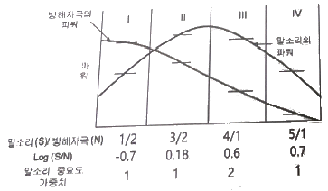
- 0.38
- 0.68
- 1.38
- 5.68
(정답률: 59%)
37. 정보수용을 위한 작업자의 시각 영역에 대한 설명으로 옳은 것은?
- 판별시야 – 안구운동만으로 정보를 주시하고 순간적으로 특정정보를 수용할 수 있는 범위
- 유효시야 – 시력, 색판별 등의 시각 기능이 뛰어나며 정밀도가 높은 정보를 수용할 수 있는 범위
- 보조시야 – 머리부분의 운동이 안구운동을 돕는 형태로 발생하며 무리 없이 주시가 가능한 범위
- 유도시야 – 제시된 정보의 존재를 판별할 수 있는 정도의 식별능력 밖에 없지만 인간의 공간좌표 감각에 영향을 미치는 범위
(정답률: 43%)
38. FMEA 분석 시 고장평점법의 5가지 평가요소에 해당하지 않는 것은?
- 고장발생의 빈도
- 신규설계의 가능성
- 기능적 고장 영향의 중요도
- 영향을 미치는 시스템의 범위
(정답률: 70%)
39. 건구온도 30℃, 습구온도 35℃일 때의 옥스퍼드(Oxford) 지수는?
- 20.75
- 24.58
- 30.75
- 34.25
(정답률: 55%)
40. 설비보전에서 평균수리시간을 나타내는 것은?
- MTBF
- MTTR
- MTTF
- MTBP
(정답률: 72%)
3과목: 기계위험방지기술
41. 산업안전보건법령상 사업장내 근로자 작업환경 중 ‘강렬한 소음작업’에 해당하지 않는 것은?
- 85데시벨 이상의 소음이 1일 10시간 이상 발생하는 작업
- 90데시벨 이상의 소음이 1일 8시간 이상 발생하는 작업
- 95데시벨 이상의 소음이 1일 4시간 이상 발생하는 작업
- 100데시벨 이상의 소음이 1일 2시간 이상 발생하는 작업
(정답률: 70%)
42. 산업안전보건법령상 프레스의 작업 시작 전 점검 사항이 아닌 것은?
- 슬라이드 또는 칼날에 의한 위험방지 기구의 기능
- 프레스의 금형 및 고정볼트 상태
- 전단기의 칼날 및 테이블의 상태
- 권과방지장치 및 그 밖의 경보장치의 기능
(정답률: 69%)
43. 동력전달부분의 전방 35cm 위치에 일반 평형보호망을 설치하고자 한다. 보호망의 최대 구멍의 크기는 몇 mm인가?
- 41
- 45
- 51
- 55
(정답률: 42%)
44. 다음 연삭숫돌의 파괴원인 중 가장 적절하지 않은 것은?
- 숫돌의 회전속도가 너무 빠른 경우
- 플랜지의 직경이 숫돌 직경의 1/3이상으로 고정된 경우
- 숫돌 자체에 균열 및 파손이 있는 경우
- 숫돌에 과대한 충격을 준 경우
(정답률: 79%)
45. 화물중량이 200kgf, 지게차의 중량이 400kgf, 앞바퀴에서 화물의 무게중심까지의 최단거리가 1m일 때 지게차가 안정되기 위하여 앞바퀴에서 지게차의 무게중심까지 최단거리는 최소 몇 m를 초과해야 하는가?
- 0.2m
- 0.5m
- 1m
- 2m
(정답률: 64%)
46. 산업안전보건법령상 압력용기에서 안전인증된 파열판에 안전인증 표시 외에 추가로 나타내어야 하는 사항이 아닌 것은?
- 분출차(%)
- 호칭지름
- 용도(요구성능)
- 유체의 흐름방향 지시
(정답률: 59%)
47. 선반에서 일감의 길이가 지름에 비하여 상당히 길 때 사용하는 부속품으로 절삭 시 절삭저항에 의한 일감의 진동을 방지하는 장치는?
- 칩 브레이커
- 척 커버
- 방진구
- 실드
(정답률: 59%)
48. 산업안전보건법령상 프레스를 제외한 사출성형기ㆍ주형조형기 및 형단조기 등에 관한 안전조치 사항으로 틀린 것은?
- 근로자의 신체 일부가 말려들어갈 우려가 있는 경우에는 양수조작식 방호장치를 설치하여 사용한다.
- 게이트 가드식 방호장치를 설치할 경우에는 연동구조를 적용하여 문을 닫지 않아도 동작할 수 있도록 한다.
- 사출성형기의 전면에 작업용 발판을 설치할 경우 근로자가 쉽게 미끄러지지 않는 구조여야 한다.
- 기계의 히터 등의 가열 부위, 감전 우려가 있는 부위에는 방호덮개를 설치하여 사용한다.
(정답률: 76%)
49. 연강의 인장강도가 420MPa이고, 허용응력이 140MPa이라면 안전율은?
- 1
- 2
- 3
- 4
(정답률: 79%)
50. 밀링 작업 시 안전 수칙에 관한 설명으로 틀린 것은?
- 칩은 기계를 정지시킨 다음에 브러시 등으로 제거한다.
- 일감 또는 부속장치 등을 설치하거나 제거할 때는 반드시 기계를 정지시키고 작업한다.
- 면장갑을 반드시 끼고 작업한다.
- 강력 절삭을 할 때는 일감을 바이스에 깊게 물린다.
(정답률: 80%)
51. 다음 중 프레스기에 사용되는 방호장치에 있어 원칙적으로 급정지 기구가 부착되어야만 사용할 수 있는 방식은?
- 양수조작식
- 손쳐내기식
- 가드식
- 수인식
(정답률: 60%)
52. 산업안전보건법령상 지게차의 최대하중의 2배 값이 6톤일 경우 헤드가드의 강도는 몇 톤의 등분포정하중에 견딜 수 있어야 하는가?
- 4
- 6
- 8
- 10
(정답률: 57%)
53. 강자성체를 자화하여 표면의 누설자속을 검출하는 비파괴 검사 방법은?
- 방사선 투과 시험
- 인장시험
- 초음파 탐상 시험
- 자분 탐상 시험
(정답률: 73%)
54. 산업안전보건법령상 보일러 방호장치로 거리가 가장 먼 것은?
- 고저수위 조절장치
- 아우트리거
- 압력방출장치
- 압력제한스위치
(정답률: 78%)
55. 산업안전보건법령상 아세틸렌 용접장치에 관한 설명이다. ( )안에 공통으로 들어갈 내용으로 옳은 것은?
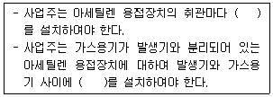
- 분기장치
- 자동발생 확인장치
- 유수 분리장치
- 안전기
(정답률: 72%)
56. 프레스기의 안전대책 중 손을 금형 사이에 집어넣을 수 없도록 하는 본질적 안전화를 위한 방식(no-hand in die)에 해당하는 것은?
- 수인식
- 광전자식
- 방호울식
- 손쳐내기식
(정답률: 54%)
57. 회전하는 부분의 접선방향으로 몰려 들어갈 위험이 존재하는 점으로 주로 체인, 풀리, 벨트, 기어와 랙 등에서 형성되는 위험점은?
- 끼임점
- 협착점
- 절단점
- 접선물림점
(정답률: 67%)
58. 산업안전보건법령상 양중기에 해당하지 않는 것은? (문제 오류로 가답안 발표시 3번으로 발표되었지만 확정 답안 발표시 3, 4번이 정답처리 되었습니다. 여기서는 가답안인 3번을 누르면 정답 처리 됩니다.)
- 곤돌라
- 이동식 크레인
- 적재하중 0.⑤톤의 이삿짐운반용 리프트 화물용 엘리베이터
- 화물용 엘리베이터
(정답률: 77%)
59. 다음 설명 중 ( )안에 알맞은 내용은?
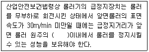
- 1/4
- 1/3
- 1/2.5
- 1/2
(정답률: 72%)
60. 산업안전보건법령상 지게차에서 통상적으로 갖추고 있어야 하나, 마스트의 후방에서 화물이 낙하함으로써 근로자에게 위험을 미칠 우려가 없는 때에는 반드시 갖추지 않아도 되는 것은?
- 전조등
- 헤드가드
- 백레스트
- 포크
(정답률: 68%)
4과목: 전기위험방지기술
61. 피뢰시스템의 등급에 따른 회전구체의 반지름으로 틀린 것은?
- Ⅰ등급: 20m
- Ⅱ등급: 30m
- Ⅲ등급: 40m
- Ⅳ등급: 60m
(정답률: 54%)
62. 전류가 흐르는 상태에서 단로기를 끊었을 때 여러 가지 파괴작용을 일으킨다. 다음 그림에서 유입차단기의 차단순서와 투입순서가 안전수칙에 가장 적합한 것은?
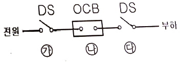
- 차단: ㉮→㉯→㉰, 투입: ㉮→㉯→㉰
- 차단: ㉯→㉰→㉮, 투입: ㉯→㉰→㉮
- 차단: ㉰→㉯→㉮, 투입: ㉰→㉮→㉯
- 차단: ㉯→㉰→㉮, 투입: ㉰→㉮→㉯
(정답률: 72%)
63. 다음은 무슨 현상을 설명한 것인가?
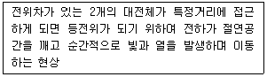
- 대전
- 충전
- 방전
- 열전
(정답률: 64%)
64. 정전기 재해를 예방하기 위해 설치하는 제전기의 제전효율은 설치 시에 얼마 이상이 되어야 하는가?
- 40%이상
- 50%이상
- 70%이상
- 90%이상
(정답률: 54%)
65. 정전기 화재폭발 원인으로 인체대전에 대한 예방대책으로 옳지 않은 것은?
- Wrist Strap을 사용하여 접지선과 연결한다.
- 대전방지제를 넣은 제전복을 착용한다.
- 대전방지 성능이 있는 안전화를 착용한다.
- 바닥 재료는 고유저항이 큰 물질로 사용한다.
(정답률: 67%)
66. 정격사용률이 30%, 정격2차전류가 300A인 교류아크 용접기를 200A로 사용하는 경우의 허용사용률(%)은?
- 13.3
- 67.5
- 110.3
- 157.5
(정답률: 61%)
67. 피뢰기의 제한 전압이 752kV이고 변압기의 기준충격 절연강도가 1⑤0kV이라면, 보호 여유도(%)는 약 얼마인가?
- 18
- 28
- 40
- 43
(정답률: 48%)
68. 절연물의 절연불량 주요원인으로 거리가 먼 것은?
- 진동, 충격 등에 의한 기계적 요인
- 산화 등에 의한 화학적 요인
- 온도상승에 의한 열적 요인
- 정격전압에 의한 전기적 요인
(정답률: 59%)
69. 고장전류를 차단할 수 있는 것은?
- 차단기(CB)
- 유입 개폐기(OS)
- 단로기(DS)
- 선로 개폐기(LS)
(정답률: 71%)
70. 주택용 배선차단기 B타입의 경우 순시동작범위는? (단, In는 차단기 정격전류이다.)
- 3In 초과 ~ 5In 이하
- 5In 초과 ~ 10In 이하
- 10In 초과 ~ 15In 이하
- 10In 초과 ~ 20In 이하
(정답률: 38%)
71. 다음 중 방폭 구조의 종류가 아닌 것은?
- 유압 방폭구조(k)
- 내압 방폭구조(d)
- 본질안전 방폭구조(i)
- 압력 방폭구조(p)
(정답률: 66%)
72. 동작 시 아크가 발생하는 고압 및 특고압용 개폐기ㆍ차단기의 이격거리(목재의 벽 또는 천장, 기타 가연성 물체로부터의 거리)외 기준으로 옳은 것은? (단, 사용전압이 35kV 이하의 특고압용의 기구 등으로서 동작할 때에 생기는 아크의 방향과 길이를 화재가 발생할 우려가 없도록 제한하는 경우가 아니다.)
- 고압용: 0.8m 이상, 특고압용: 1.0m 이상
- 고압용: 1.0m 이상, 특고압용: 2.0m 이상
- 고압용: 2.0m 이상, 특고압용: 3.0m 이상
- 고압용: 3.5m 이상, 특고압용: 4.0m 이상
(정답률: 55%)
73. 3300/220V, 20kVA인 3상 변압기로부터 공급받고 있는 저압 전선로의 절연 부분의 전선과 대지 간의 절연저항의 최소값은 약 몇 Ω인가? (단, 변압기의 저압 측 중성점에 접지가 되어 있다.)
- 1240
- 2794
- 4840
- 8383
(정답률: 35%)
74. 감전사고로 인한 전격사의 메카니즘으로 가장 거리가 먼 것은?
- 흉부수축에 의한 질식
- 심실세동에 의한 혈액순환기능의 상실
- 내장파열에 의한 소화기계통의 기능상실
- 호흡중추신경 마비에 따른 호흡기능 상실
(정답률: 73%)
75. 욕조나 샤워시설이 있는 욕실 또는 화장실에 콘센트가 시설되어 있다. 해당 전로에 설치된 누전차단기의 정격감도전류와 동작시간은?
- 정격감도전류 15mA 이하, 동작시간 0.01초 이하
- 정격감도전류 15mA 이하, 동작시간 0.03초 이하
- 정격감도전류 30mA 이하, 동작시간 0.01초 이하
- 정격감도전류 30mA 이하, 동작시간 0.03초 이하
(정답률: 65%)
76. 50kW, 60Hz 3상 유도전동기가 380V 전원에 접속된 경우 흐르는 전류(A)는 약 얼마인가? (단, 역률은 80%이다.)
- 82.24
- 94.96
- 116.30
- 164.47
(정답률: 40%)
77. 인체저항을 500Ω이라 한다면, 심실세동을 일으키는 위험 한계 에너지는 약 몇 J 인가? (단, 심실세동전류값
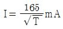
의 Dalziel의 식을 이용하며, 통전시간은 1초로 한다.)- 11.5
- 13.6
- 15.3
- 16.2
(정답률: 71%)
78. 내압방폭용기 “d”에 대한 설명으로 틀린 것은?
- 원통형 나사 접합부의 체결 나사산 수는 5산 이상이어야 한다.
- 가스/증기 그룹이 ⅡB일 때 내압 접합면과 장애물과의 최소 이격거리는 20mm이다.
- 용기 내부의 폭발이 용기 주위의 폭발성 가스 분위기로 화염이 전파되지 않도록 방지하는 부분은 내압방폭 접합부이다.
- 가스/증기 그룹이 ⅡC일 때 내압 접합면과 장애물과의 최소 이격거리는 40mm이다.
(정답률: 44%)
79. KS C IEC 60079-0의 정의에 따라 ‘두 도전부 사이의 고체 절연물 표면을 따른 최단거리’를 나타내는 명칭은?
- 전기적 간격
- 절연공간거리
- 연면거리
- 충전물 통과거리
(정답률: 58%)
80. 접지 목적에 따른 분류에서 병원설비의 의료용 전기전자(MㆍE)기기와 모든 금속부분 또는 도전바닥에도 접지하여 전위를 동일하게 하기 위한 접지를 무엇이라 하는가?
- 계통 접지
- 등전위 접지
- 노이즈방지용 접지
- 정전기 장해방지 이용 접지
(정답률: 74%)
5과목: 화학설비위험방지기술
81. 다음 중 고체연소의 종류에 해당하지 않는 것은?
- 표면연소
- 증발연소
- 분해연소
- 예혼합연소
(정답률: 59%)
82. 가연성물질을 취급하는 장치를 퍼지하고자 할 때 잘못된 것은?
- 대상물질의 물성을 파악한다.
- 사용하는 불활성가스의 물성을 파악한다.
- 퍼지용 가스를 가능한 한 빠른 속도로 단시간에 다량 송입한다.
- 장치내부를 세정한 후 퍼지용 가스를 송입한다.
(정답률: 77%)
83. 위험물질에 대한 설명 중 틀린 것은?
- 과산화나트륨에 물이 접촉하는 것은 위험하다.
- 황린은 물속에 저장한다.
- 염소산나트륨은 물과 반응하여 폭발성의 수소기체를 발생한다.
- 아세트알데히드는 0℃이하의 온도에서도 인화할 수 있다.
(정답률: 32%)
84. 공정안전보고서 중 공정안전자료에 포함하여야 할 세부내용에 해당하는 것은?
- 비상조치계획에 따른 교육계획
- 안전운전지침서
- 각종 건물ㆍ설비의 배치도
- 도급업체 안전관리계획
(정답률: 46%)
85. 디에틸에테르의 연소범위에 가장 가까운 값은?
- 2~10.4%
- 1.9~48%
- 2.5~15%
- 1.5~7.8%
(정답률: 58%)
86. 공기 중에서 A 가스의 폭발하한계는 2.2vol%이다. 이 폭발하한계 값을 기준으로 하여 표준 상태에서 A 가스와 공기의 혼합기체 1m3에 함유되어 있는 A 가스의 질량을 구하면 약 몇 g 인가? (단, A 가스의 분자량은 26이다.)
- 19.02
- 25.54
- 29.02
- 35.54
(정답률: 47%)
87. 다음 물질 중 물에 가장 잘 융해되는 것은?
- 아세톤
- 벤젠
- 톨루엔
- 휘발유
(정답률: 71%)
88. 가스누출감지경보기 설치에 관한 기술상의 지침으로 틀린 것은?
- 암모니아를 제외한 가연성가스 누출감지경보기는 방폭성능을 갖는 것이어야 한다.
- 독성가스 누출감지경보기는 해당 독성가스 허용농도의 25% 이하에서 경보가 울리도록 설정하여야 한다.
- 하나의 감지대상가스가 가연성이면서 독성인 경우에는 독성가스를 기준하여 가스누출감지경보기를 선정하여야 한다.
- 건축물 안에 설치되는 경우, 감지대상가스의 비중이 공기보다 무거운 경우에는 건축물 내의 하부에 설치하여야 한다.
(정답률: 58%)
89. 폭발을 기상폭발과 응상폭발로 분류할 때 기상폭발에 해당되지 않는 것은?
- 분진 폭발
- 혼합가스폭발
- 분무폭발
- 수증기폭발
(정답률: 56%)
90. 다음 가스 중 가장 독성이 큰 것은?
- CO
- COCI2
- NH3
- H2
(정답률: 73%)
91. 처음 온도가 20℃인 공기를 절대압력 1기압에서 3기압으로 단열압축하면 최종온도는 약 몇 도인가? (단, 공기의 비열비 1.4이다.)
- 68℃
- 75℃
- 128℃
- 164℃
(정답률: 46%)
92. 물질의 누출방지용으로써 접합면을 상호 밀착시키기 위하여 사용하는 것은?
- 개스킷
- 체크밸브
- 플러그
- 콕크
(정답률: 67%)
93. 건조설비의 구조를 구조부분, 가열장치, 부속설비로 구분할 때 다음 중 “부속설비”에 속하는 것은?
- 보온판
- 열원장치
- 소화장치
- 철골부
(정답률: 57%)
94. 에틸렌(C2H4)이 완전연소하는 경우 다음의 Jones식을 이용하여 계산할 경우 연소하한계는 약 몇 vol%인가?
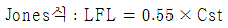
- 0.55
- 3.6
- 6.3
- 8.5
(정답률: 46%)
95. [보기]의 물질을 폭발 범위가 넓은 것부터 좁은 순서로 옳게 배열한 것은?
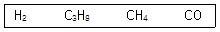
- CO＞H2＞C3H8＞CH4
- H2＞CO＞CH4＞C3H8
- C3H8＞CO＞CH4＞H2
- CH4＞H2＞CO＞C3H8
(정답률: 63%)
96. 산업안전보건법령상 위험물질의 종류에서 “폭발성 물질 및 유기과산화물”에 해당하는 것은?
- 디아조화합물
- 황린
- 알킬알루미늄
- 마그네슘 분말
(정답률: 58%)
97. 화염방지기의 설치에 관한 사항으로 ( )에 알맞은 것은?
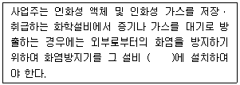
- 상단
- 하단
- 중앙
- 무게중심
(정답률: 76%)
98. 다음 중 인화성 가스가 아닌 것은?
- 부탄
- 메탄
- 수소
- 산소
(정답률: 71%)
99. 반응기를 조작방식에 따라 분류할 때 해당되지 않는 것은?
- 회분식 반응기
- 반회분식 반응기
- 연속식 반응기
- 관형식 반응기
(정답률: 63%)
100. 다음 중 가연성 물질과 산화성 고체가 혼합하고 있을 때 연소에 미치는 현상으로 옳은 것은?
- 착화온도(발화점)가 높아진다.
- 최소점화에너지가 감소하며, 폭발의 위험성이 증가한다.
- 가스나 가연성 증기의 경우 공기혼합보다 연소범위가 축소된다.
- 공기 중에서보다 산화작용이 약하게 발생하여 화염온도가 감소하며 연소속도가 늦어진다.
(정답률: 63%)
6과목: 건설안전기술
101. 건설현장에서 사용되는 작업발판 일체형 거푸집의 종류에 해당되지 않는 것은?
- 갱폼(gang form)
- 슬립폼(slip form)
- 클라이밍 폼(climbing form)
- 유로폼(euro form)
(정답률: 65%)
102. 콘크리트 타설작업을 하는 경우 준수하여야 할 사항으로 옳지 않은 것은?
- 당일의 작업을 시작하기 전에 해당 작업에 관한 거푸집동바리등의 변형ㆍ변위 및 지반의 침하 유무 등을 점검하고 이상이 있으면 보수할 것
- 콘크리트를 타설하는 경우에는 편심이 발생하지 않도록 골고루 분산하여 타설할 것
- 설계도서상의 콘크리트 양생기간을 준수하여 거푸집동바리등을 해체할 것
- 작업 중에는 거푸집동바리등의 변형ㆍ변위 및 침하 유무 등을 감시할 수 있는 감시자를 배치하여 이상이 있으면 작업을 중지하지 아니하고, 즉시 충분한 보강조치를 실시할 것
(정답률: 73%)
103. 버팀보, 앵커 등의 축하중 변화상태를 측정하여 이들 부재의 지지효과 및 그 변화 추이를 파악하는데 사용되는 계측기기는?
- water level meter
- load cell
- piezo meter
- strain gauge
(정답률: 50%)
104. 차량계 건설기계를 사용하여 작업을 하는 경우 작업계획서 내용에 포함되지 않는 것은?
- 사용하는 차량계 건설기계의 종류 및 성능
- 차량계 건설기계의 운행경로
- 차량계 건설기계에 의한 작업방법
- 차량계 건설기계의 유지보수방법
(정답률: 64%)
1⑤. 근로자의 추락 등의 위험을 방지하기 위한 안전난간의 설치기준으로 옳지 않은 것은?
- 상부 난간대와 중간 난간대는 난간 길이 전체에 걸쳐 바닥면등과 평행을 유지할 것
- 발끝막이판은 바닥면등으로부터 20cm이상의 높이를 유지할 것
- 난간대는 지름 2.7cm 이상의 금속제 파이프나 그 이상의 강도가 있는 재료일 것
- 안전난간은 구조적으로 가장 취약한 지점에서 가장 취약한 방향으로 작용하는 100kg 이상의 하중에 견딜 수 있는 튼튼한 구조일 것
(정답률: 54%)
106. 흙 속의 전단응력을 증대시키는 원인에 해당하지 않는 것은?
- 자연 또는 인공에 의한 지하공동의 형성
- 함수비의 감소에 따른 흙의 단위체적 중량의 감소
- 지진, 폭파에 의한 진동 발생
- 균열내에 작용하는 수압증가
(정답률: 59%)
107. 다음은 산업안전보건법령에 따른 항타기 또는 항발기에 권상용 와이어로프를 사용하는 경우에 준수하여야 할 사항이다. ( )안에 알맞은 내용으로 옳은 것은?
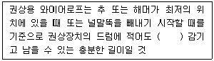
- 1회
- 2회
- 4회
- 6회
(정답률: 59%)
108. 산업안전보건법령에 따른 유해위험방지계획서 제출 대상 공사로 볼 수 없는 것은?
- 지상 높이가 31m 이상인 건축물의 건설공사
- 터널 건설공사
- 깊이 10m 이상인 굴착공사
- 다리의 전체길이가 40m 이상인 건설공사
(정답률: 73%)
109. 사다리식 통로 등을 설치하는 경우 고정식 사다리식 통로의 기울기는 최대 몇 도 이하로 하여야 하는가?
- 60도
- 75도
- 80도
- 90도
(정답률: 51%)
110. 거푸집동바리 구조에서 높이가 l=3.5m인 파이프서포트의 좌굴하중은? (단, 상부받이판과 하부받이판은 힌지로 가정하고, 단면2차모멘트 I=8.31cm4, 탄성계수 E=2.1×105MPa)
- 14060N
- 15060N
- 16060N
- 17060N
(정답률: 28%)
111. 하역작업 등에 의한 위험을 방지하기 위하여 준수하여야 할 사항으로 옳지 않은 것은?
- 꼬임이 끊어진 섬유로프를 화물운반용으로 사용해서는 안 된다.
- 심하게 부식된 섬유로프를 고정용으로 사용해서는 안 된다.
- 차량 등에서 화물을 내리는 작업 시 해당 작업에 종사하는 근로자에게 쌓여 있는 화물 중간에서 화물을 빼내도록 할 경우에는 사전 교육을 철저히 한다.
- 부두 또는 안벽의 선을 따라 통로를 설치하는 경우에는 폭을 90cm 이상으로 한다.
(정답률: 73%)
112. 추락방지용 방망 중 그물코의 크기가 5cm인 매듭방망 신품의 인장강도는 최소 몇 kg이상이어야 하는가?
- 60
- 110
- 150
- 200
(정답률: 63%)
113. 단관비계의 도괴 또는 전도를 방지하기 위하여 사용하는 벽이음의 간격기준으로 옳은 것은?
- 수직방향 5m 이하, 수평방향 5m 이하
- 수직방향 6m 이하, 수평방향 6m 이하
- 수직방향 7m 이하, 수평방향 7m 이하
- 수직방향 8m 이하, 수평방향 8m 이하
(정답률: 66%)
114. 인력으로 하물을 인양할 때의 몸의 자세와 관려하여 준수하여야 할 사항으로 옳지 않은 것은?
- 한쪽 발은 들어올리는 물체를 향하여 안전하게 고정시키고 다른 발은 그 뒤에 안전하게 고정시킬 것
- 등은 항상 직립한 상태와 90도 각도를 유지하여 가능한 한 지면과 수평이 되도록 할 것
- 팔은 몸에 밀착시키고 끌어당기는 자세를 취하며 가능한 한 수평거리를 짧게 할 것
- 손가락으로만 인양물을 잡아서는 아니 되며 손바닥으로 인양물 전체를 잡을 것
(정답률: 65%)
115. 산업안전보건관리비 항목 중 안전시설비로 사용가능한 것은?
- 원활한 공사수행을 위한 가설시설 중 비계설치 비용
- 소음관련 민원예방을 위한 건설현장 소음방지용 방음시설 설치 비용
- 근로자의 재해예방을 위한 목적으로만 사용하는 CCTV에 사용되는 비용
- 기계ㆍ기구 등과 일체형 안전장치의 구입비용
(정답률: 54%)
116. 유한사면에서 원형활동면에 의해 발생하는 일반적인 사면 파괴의 종류에 해당하지 않는 것은?
- 사면내파괴(Slope failure)
- 사면선단파괴(Toe failure)
- 사면인장파괴(Tension failure)
- 사면저부파괴(Base failure)
(정답률: 49%)
117. 강관비계를 사용하여 비계를 구성하는 경우 준수해야할 기준으로 옳지 않은 것은?
- 비계기둥의 간격은 띠장 방향에서는 1.85m이하, 장선(長線) 방향에서는 1.5m 이하로 할 것
- 띠장 간격은 2.0m 이하로 할 것
- 비계기둥의 제일 윗부분으로부터 31m 되는 지점 밑부분의 비계기둥은 2개의 강관으로 묶어 세울 것
- 비계기둥 간의 적재하중은 600kg을 초과하지 않도록 할 것
(정답률: 66%)
118. 다음은 산업안전보건법령에 따른 화물자동차의 승강설비에 관한 사항이다. ( )안에 알맞은 내용으로 옳은 것은?
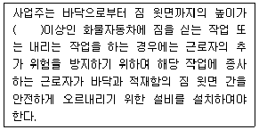
- 2m
- 4m
- 6m
- 8m
(정답률: 67%)
119. 달비계의 최대 적재하중을 정함에 있어서 활용하는 안전계수의 기준으로 옳은 것은? (단, 곤돌라의 달비계를 제외한다.)
- 달기 훅: 5 이상
- 달기 강선: 5 이상
- 달기 체인: 3 이상
- 달기 와이어로프: 5 이상
(정답률: 54%)
120. 발파작업 시 암질변화 구간 및 이상암질의 출현 시 반드시 암질판별을 실시하여야 하는데, 이와 관련된 암질판별기준과 가장 거리가 먼 것은?
- R.Q.D(%)
- 탄성파속도(m/sec)
- 전단강도(kg/cm2)
- R.M.R
(정답률: 36%)